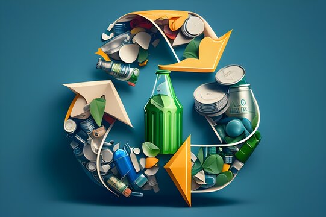
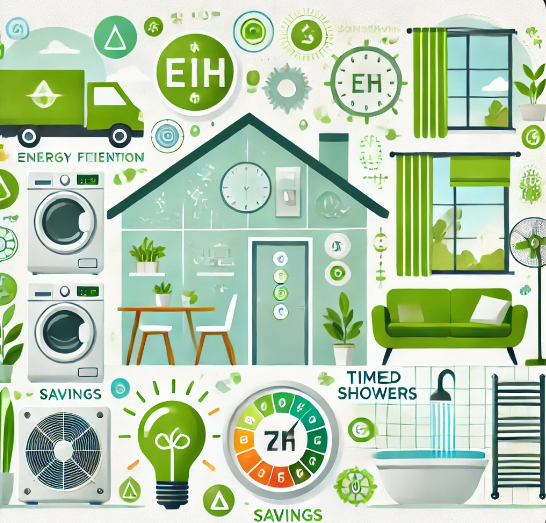
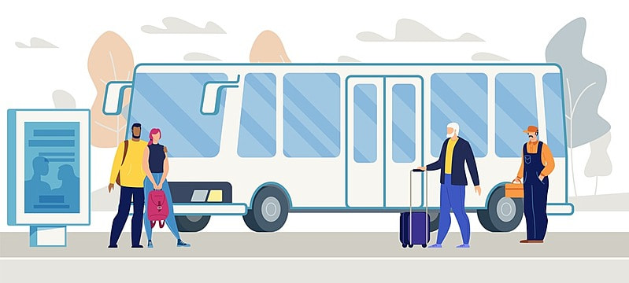
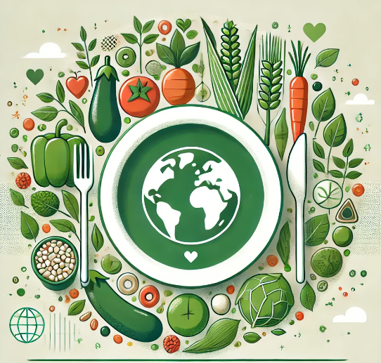
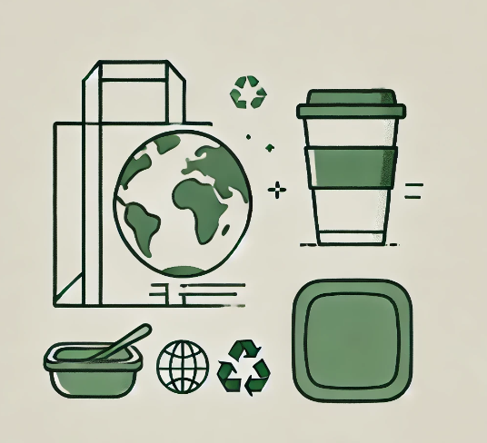

Tips For a Sustainable Lifestyle
Here are some everyday tips and tricks you can follow to ensure a healthier and more sustainable future for our planet.
1. Recycling
Embracing the mantra of ‘reduce, reuse, recycle’ can significantly benefit both the planet and your finances.
Reduce: Consume less by buying fewer items, extending the life of belongings, and choosing sustainable products.
Reuse: Opt for reusable alternatives and repurpose items to minimize waste, like using reusable grocery bags and reducing food waste.
Recycle: Properly sort recyclables to prevent environmental pollution and consult local guidelines for correct disposal.
2. Energy & Water Usage
Conserving energy and water benefits both the planet and your wallet. Simple home adjustments, like using energy-efficient appliances, natural cooling and heating, timing showers, and turning off unused electronics and lights, can lead to significant savings on utility bills while promoting sustainability.
3. Using Sustainable Transport Options
Using public transport in Australia, where available, helps reduce your carbon footprint by lowering carbon emissions per person. To make bus trips more enjoyable, consider it "me time" to listen to podcasts, read, or practice hobbies, adding relaxation or recreation to your day.
4. Choose Sustainable Food Options
Choosing certain foods can promote a sustainable lifestyle. Opt for low-impact, environmentally-friendly foods to reduce your carbon footprint. Adopting a plant-based diet and eating less meat, even just one meatless meal per week, helps conserve environmental and energy resources.
5. Reduce Plastic Usage
Major Australian retailers have eliminated single-use plastics, encouraging shoppers to use reusable or paper bags. This move supports sustainability by reducing plastic pollution. To further minimize single-use plastics, consider using a Keep-Cup for coffee and Tupperware for leftovers. Many supermarkets also offer refillable pantry basics, providing more ways to avoid single-use plastics.
